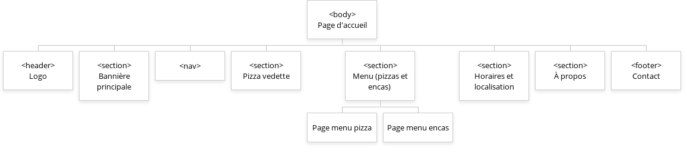
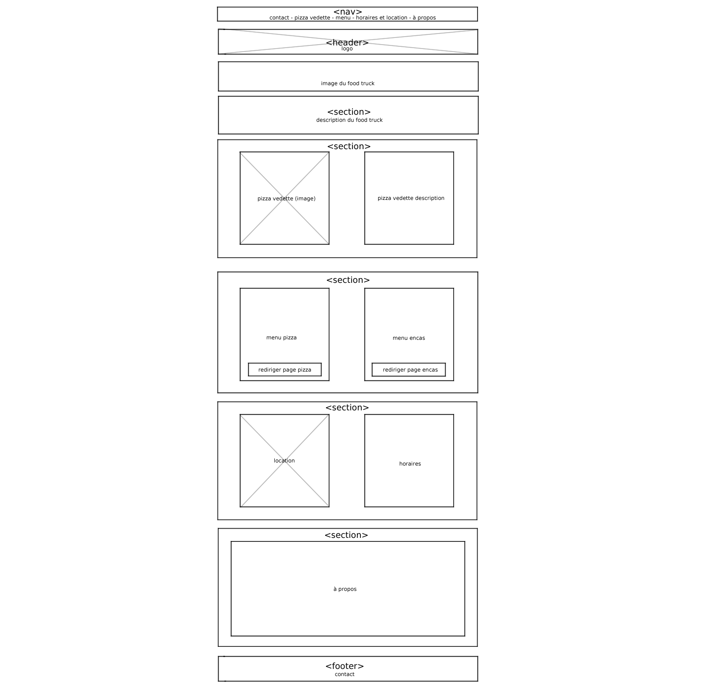
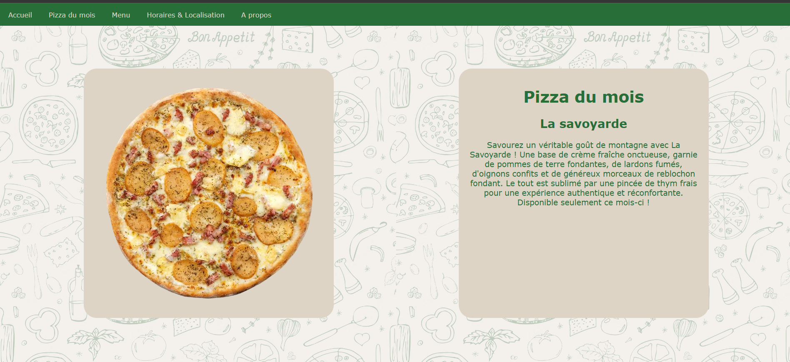
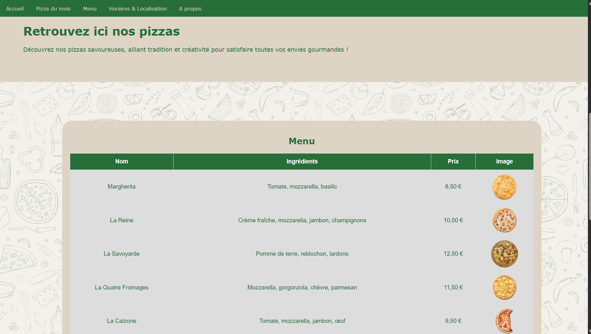
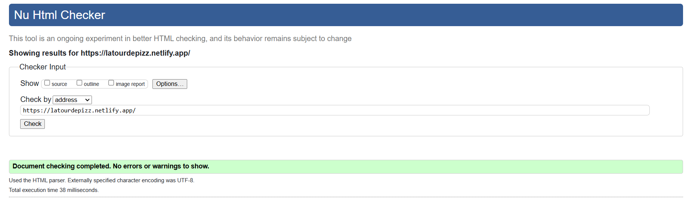
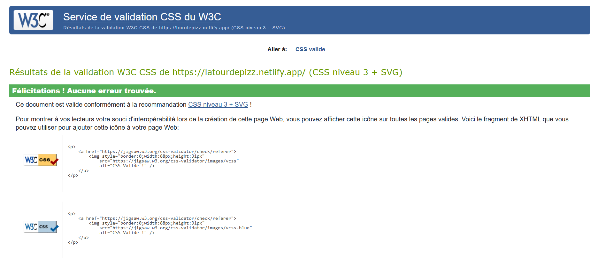

Conception du front-end d'un site web fait sous HTML et CSS uniquement.
Dans le cadre de ma première année de BUT MMI, j’ai eu pour consigne de créer un site web pour un food truck. J’ai choisi de concevoir un site pour une pizzeria ambulante que j’ai appelée La Tour de Pizz’.
L’objectif était de réaliser deux pages : une page d’accueil et une page de menu. Le site devait être responsive, clair, et mettre en valeur les produits.
Tout d’abord, j’ai commencé par créer un arbre logique pour savoir quoi mettre dans mon site et comment organiser le tout. Voici donc un arbre que j’ai fais de la page d’accueil (fait sur Gloomaps) :
Ensuite, j’ai crée un wireframe pour avoir une vague idée du physique du site avant de commencer à coder. J’ai donc utilisé Clip Studio Paint pour pouvoir placer les éléments dans la page. La structure de la page d’accueil est détaillée ici, composée d’un header, d’un footer et de plusieurs sections :
Sur la page d’accueil, j’ai présenté le concept de la pizzeria, mis en avant une pizza phare, ajouté un encart “À propos” ainsi que des informations pratiques comme les horaires et la localisation. 
Sur la page menu, j’ai organisé les plats et boissons sous forme de tableaux HTML, avec le nom, le prix et une image pour chaque élément. J’ai aussi ajouté un bouton pour changer la langue du site (français / anglais) grâce à un petit script JavaScript.
Le site est entièrement réalisé en HTML et CSS, grâce à Visual Studio Code.
J’ai utilisé les cours vus en classe pour structurer mes pages et mettre en forme le contenu avec du CSS personnalisé, notamment grâce aux balises.
J’ai travaillé avec des positions fixes, des bordures arrondies, et des couleurs cohérentes pour rendre l’ensemble agréable à lire.
Pour rendre le site un peu plus interactif, j’ai utilisé du JavaScript pour le bouton de changement de langue.
Le site est 100% front-end et j’ai veillé à respecter les bases de l’accessibilité et du responsive design. Il est conforme aux normes W3C !
 Ce projet m’a permis de comprendre comment structurer un site web simple, comment afficher correctement des données avec des tableaux, et comment rendre une page un peu plus dynamique avec du JavaScript.
J’ai aussi appris à vérifier la conformité du code sur le site du W3C, ce qui m’a permis de corriger quelques erreurs.
Visiter le site ici